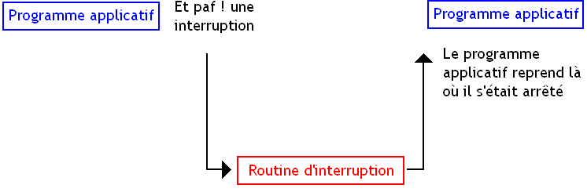
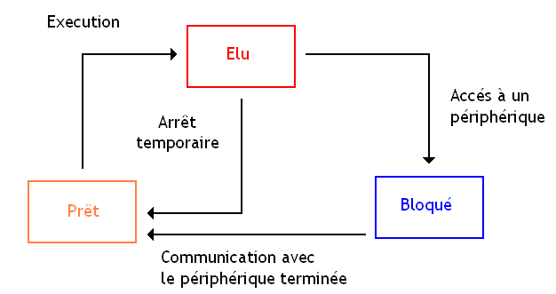
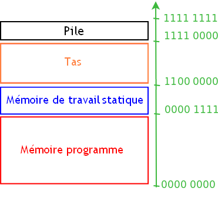
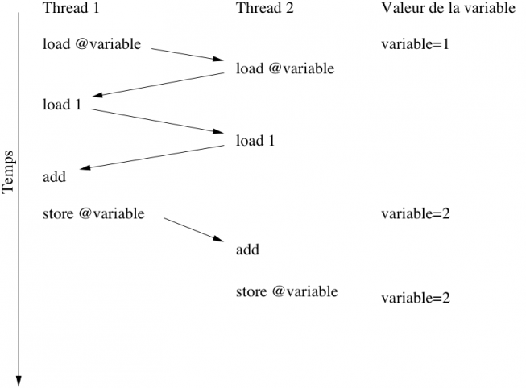
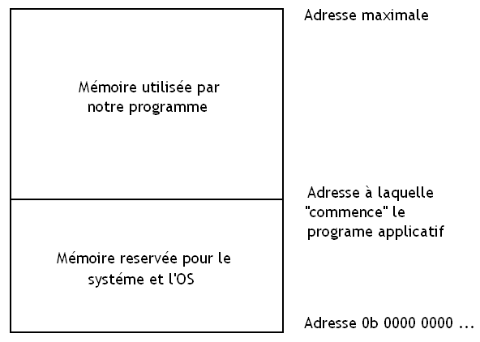
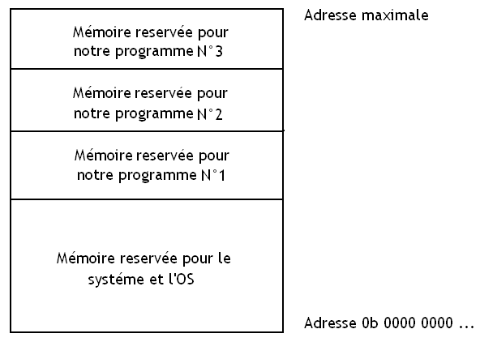
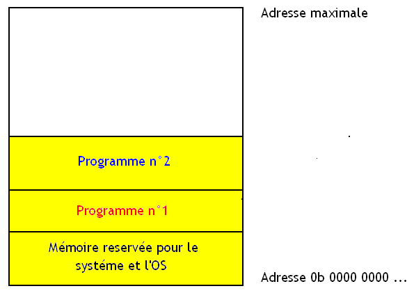
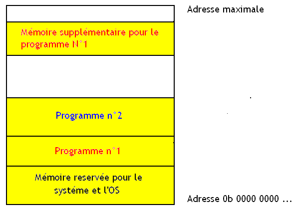
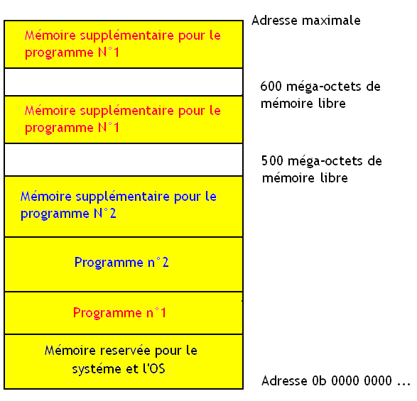

Vous utilisez tous les jours un système d'exploitation, sans forcément savoir ce qui se cache derrière ce mot. Mais savez-vous ce qu'est un système d'exploitation, son utilité, en quoi c'est fait ? Si la réponse est non, alors ce tutoriel risque sûrement de vous intéresser.
L'abstraction matérielle consiste à camoufler le fonctionnement du matériel aux programmes et faire en sorte que ceux-ci fonctionnent sur des matériels divers et variés sans problème. Dans cette partie, on va voir comment notre système d’exploitation fait pour abstraire le matériel : les mécanismes généraux d'abstraction matérielle seront vus dans ce chapitre et on se concentrera sur les mécanismes utilisés par nos programmes pour utiliser les périphériques.
Pour comprendre ce que sont les systèmes d'exploitation, on va voir la différence entre un ordinateur qui en possède un et un autre qui n'en a pas.
Sans système d'exploitation
Un seul et unique programme dans l'ordinateur se charge de tout faire, y compris manipuler le matériel. Et bien évidemment, un programmeur qui souhaite se passer de système d'exploitation doit tout programmer, y compris les parties du programme en charge de la gestion des périphériques, des ports d'entrée-sortie, de la mémoire...
De plus, ce que le programmeur aura programmé sera difficilement portable sur d'autres ordinateurs, qui n'auront pas le même matériel : on ne gère pas les périphériques et/ou la mémoire de la même façon sur tous les ordinateurs. Autant vous dire que pour rendre notre programme compatible avec un autre ordinateur, il faudrait reprogrammer une grande partie du programme ainsi conçu.
Avec un système d'exploitation
Plutôt que de créer un seul et unique programme informatique chargé de tout gérer, on segmente ce programme en plusieurs programmes séparés. Ces programmes peuvent être divisés en deux types :
Programmes systèmes
Programmes applicatifs
Ils sont en charge de la gestion du matériel de l'ordinateur. Ils gèrent :
la gestion de la mémoire ;
les périphériques et ports d'entrée-sortie ;
l'exécution des autres programmes (ceux qui ne sont pas des programmes systèmes) exécutés sur l'ordinateur.
Ces programmes applicatifs sont des programmes comme les autres qui font exécuter directement leurs instructions par le processeur, mais qui :
Ne peuvent pas gérer les périphériques et ports d'entrée-sortie.
Ne peuvent manipuler qu'une portion de la mémoire que le(s) programme(s) système(s) leur a(ont) attribué.
Lorsqu'ils ont besoin de le faire, ceux-ci délèguent les taches à effectuer aux programmes systèmes.
Généralement, les programmes systèmes (et quelques programmes applicatifs de base) sont tous regroupés dans ce qu'on appelle un système d'exploitation, aussi appelé OS (operating system en anglais). En plus de ces programmes systèmes, le reste de l'OS est composé de programmes applicatifs qui permettent par exemple d'afficher une interface qui permet à l'utilisateur de pouvoir utiliser l'ordinateur comme il le souhaite.
Évidement, ces sous-programmes systèmes ne sont pas les mêmes sur tous les systèmes d'exploitations. Ce qui est une des raisons qui font que certains programmes ne sont compatibles qu'avec (mettez ici le nom de n'importe quel OS).
L'intérêt de cette séparation ?
Très simple : plutôt que de devoir reprogrammer à chaque fois la gestion de la mémoire, des périphériques, et cetera, on programme une seule fois les programmes qui s'occupent de la gestion du matériel. Ensuite, on crée des programmes applicatifs, qui pourront si besoin est communiquer avec les programmes systèmes. L'avantage, c'est que tout le travail de programmation de l'accès au matériel est déjà fait. Les programmeurs peuvent se contenter de créer des programmes applicatifs et n'ont pas besoin de programmer les programmes systèmes.
Pour information, voici une liste des taches qui sont déléguées aux programmes systèmes :
gérer une partie de ce qui concerne la mémoire ;
la gestion de l’exécution de plusieurs programmes sur un même ordinateur ;
permettre à plusieurs programmes d'échanger des données entre eux si besoin est ;
gérer tous les périphériques de l'ordinateur ;
la gestion des fichiers , du réseau , du son, de l'affichage ;
...
Pilotes
Un système d'exploitation ne sait généralement pas utiliser tous les périphériques et ports d'entrée-sortie existants. Pour cela, on a inventé les pilotes de périphériques, des programmes qui permettent à un programme (ici, le système d'exploitation) de communiquer avec un périphérique. Ils contiennent des programmes systèmes qui effectuent chacun une action particulière sur le périphérique.
Par exemple, un pilote de carte réseau contient un programme système qui va permettre d'envoyer des données à la carte réseau et capable de manipuler les bus adéquats. Ce programme système est différent pour chaque carte réseau. Mais du point de vue du programme applicatif, peut importe la façon dont ce programme système est conçu, celui-ci va envoyer une donnée à la carte réseau. Ainsi, quelque soit le pilote, et donc le périphérique, le résultat sera le même : la façon dont la carte réseau fonctionne n'intervient pas ! Évidement, la façon dont le pilote de périphérique va communiquer avec le système d'exploitation est standardisée pour faciliter le tout.
On vient de voir que notre OS et nos pilotes ont comme fonction la prise en charge d'une partie de la gestion du matériel et fournissent quelques abstractions matérielles minimales au système d'exploitation et à l'utilisateur. On peut légitimement se demander comment nos programmes systèmes vont-ils faire pour gérer le matériel et comment nos programmes applicatifs vont-ils pouvoir les utiliser comme bon leur semble. Pour communiquer avec le matériel, nos fameux programmes systèmes vont utiliser des fonctionnalités de notre processeur qu'on appelle les interruptions.
Interruptions
Holà, c'est quoi une interruption ?
C'est une fonctionnalité de notre processeur qui va permettre d’arrêter temporairement l’exécution d'un programme pour en exécuter un autre. On les utilise pour quelques cas bien précis, qui nécessitent un traitement ne pouvant attendre trop longtemps : communiquer avec un ou des périphériques, par exemple. Ainsi, pour communiquer avec une carte graphique, un disque dur ou encore avec le clavier, nos programmes applicatifs vont devoir utiliser des interruptions.
Ces interruptions ont pour but d'interrompre l’exécution d'un programme afin de réagir à un événement extérieur (matériel, erreur fatale d’exécution d'un programme...) et de la traiter en temps voulu, avant de rendre la main au programme interrompu. Notre interruption va donc devoir effectuer un petit traitement (ici, communiquer avec un périphérique). Ce petit traitement est fait par un petit programme au auquel on a donné un nom technique : routine d'interruption.

Notre OS et nos pilotes fournissent toutes les routines d'interruptions de bases pour que notre matériel fonctionne : la majorité des programmes systèmes sont des interruptions. Voici comment nos programmes applicatifs peuvent exploiter le matériel sans se fatiguer : en exécutant l'interruption qui va bien. Vous voulez écrire une donnée sur le disque dur, un programme système exécutant des interruptions est fourni par votre OS.
Vecteur d'interruption
Comme on l'a dit, une interruption a été conçue pour réagir à un événement, mais ce sont avant tout des programmes comme les autres, qui peuvent être exécutés comme n'importe quelle autre programme. Dans notre cas, ces interruptions seront simplement considérées comme des programmes simplistes permettant d'agir sur un périphérique. Bien sûr, devant la multiplicité des périphériques, on se doute bien qu'il n'existe pas d'interruption à tout faire : il va de soi qu'un programme envoyant un ordre au disque dur sera différent d'un programme agissant sur une carte graphique. Dans chaque cas, on aura besoin d'effectuer un traitement différent. On a donc besoin de plusieurs routines d'interruption.
Mais il faut bien décider quelle est l'interruption à exécuter suivant la situation. Par exemple, exécuter l'interruption de gestion du clavier alors qu'on souhaite communiquer avec notre disque dur donnerait un résultat plutôt comique. :p On va donc devoir stocker plusieurs de ces routines dans sa mémoire. Mais comment les retrouver ? Comme les autres données ! Pour expliquer correctement cela, il va falloir faire un petit rappel.
La mémoire de notre ordinateur est un vulgaire amas de cellules mémoire, chacune capable de retenir des bits : on rappelle qu'un bit est une information qui peut prendre deux valeurs : 0 ou 1. Ces cellules mémoires sont regroupées en paquets de 8, qu'on appelle des cases mémoires. Ces cases mémoires vont donc contenir des données (ou des morceaux de données : un nombre entier prend souvent plusieurs cases mémoires). Pour savoir à quelle case mémoire on a stocké notre donnée, notre ordinateur va identifier chaque case mémoire par un nombre unique : l'adresse mémoire. Chaque routine est donc placée dans la mémoire à un certain endroit, localisable par son adresse : elle indique sa position dans la mémoire.
Pour retrouver la position de notre routine en mémoire et savoir laquelle exécuter, certains ordinateurs utilisent une partie de leur mémoire pour stocker toutes les adresses de début de chaque routine d'interruption. En gros, cette partie de la mémoire contient toute les adresse permettant de localiser chaque routine. Cette portion de la mémoire s'appelle le vecteur d'interruption. Pour chaque interruption, une partie fixe de la mémoire contiendra l'adresse de début de l'interruption à effectuer.
Ce vecteur d'interruption est initialisé par le BIOS au démarrage de l'ordinateur. Néanmoins, nos pilotes et le système d'exploitation vont fournir leurs propres routines. Pour que celles-ci soient exécutées, il suffit à l'OS de "détourner l'interruption". Cela consiste à remplacer l'adresse de l'interruption contenue dans le vecteur d'interruption par l'adresse de la routine que l'OS a chargé en mémoire (bien sûr, l'ancienne adresse est sauvegardée). En clair, le vecteur d'interruption ne contiendra plus l'adresse servant à localiser la routine du BIOS, mais renverra vers l'adresse localisant la routine de l'OS.
Comment profiter de ces interruptions ?
Vous l'avez compris, une grande partie des programmes systèmes sont des routines d'interruptions. Notre système d'exploitation fournit donc un grand nombre d'interruptions ayant chacune une fonction bien précise. Ce peut être des interruptions qui servent à communiquer avec un disque dur, ou des interruptions qui servent à effectuer des manipulations plus évoluées (gérer la mémoire notamment). Ces interruptions ne sont pas toutes standardisées et certaines d'entre elles peuvent varier suivant les systèmes d'exploitation, ce qui est la cause de quelques incompatibilités.
Il y a trois manières de déclencher une interruption :
les exceptions, qui se produisent automatiquement lorsque le processeur rencontre une erreur (du style une division par zéro),
les requêtes d'interruptions, qui sont déclenchées par un événement d'origine matérielle.
Nos programmes applicatifs utilisent la premiére méthode : l'instruction machine int. Cette instruction machine a besoin de quelques petites informations pour faire ce qui est demandé. Tout d'abord, elle a besoin de savoir quelle interruption exécuter. Pour cela, elle a besoin du numéro de l'interruption dans le vecteur d'interruption. En clair, l'adresse de la routine est stockée dans ce vecteur d'interruption, quelque part, à une adresse bien précise. Notre instruction int a besoin de connaitre cette adresse qui correspond à la portion de mémoire qui stocke l'adresse de la routine. Elle ne peut prendre directement l'adresse de la routine : si celle-ci est détournée, cette adresse changera et ne sera pas connue du programme applicatif.
Un grande partie de ces routines a besoin qu'on leur fournisse des paramètres, des informations pour qu'elles fassent ce qu'elles doivent faire. Par exemple, une routine devant afficher une lettre à l'écran aura besoin qu'on lui passe en entrée la lettre à afficher. Pour chaque routine, il suffira de copier ces paramètres de la mémoire vers des petites mémoires ultra-rapides intégrées dans le processeur qu'on appelle les registres. Ces registres ont des utilités différentes suivant la situation et ne servent pas que pour les interruptions : ils peuvent servir à conserver temporairement une donnée, stocker des informations sur l'état du processeur ou pour quoique ce soit d'autre. Chacun de ces registres possède un nom qui permet de l'identifier : EAX, AX, AH, AL...Pour chaque routine, chaque registre va contenir une donnée ayant une signification bien précise pour notre routine.
On l'a vu auparavant, les programmes systèmes et les programmes applicatifs n'ont pas vraiment les mêmes droits : certains peuvent accéder à la mémoire et d'autres non. Pour le moment, on a aucune certitude qu'un programme applicatif n'accédera pas aux périphériques ou fasse des manipulations dangereuses avec la mémoire. Il faut donc trouver un moyen de protéger le matériel contre les actions dangereuses des programmes applicatifs et faire en sorte que ceux-ci restent à leur place. Pour cela, on doit trouver une solution. Et cette solution est fournie par notre système d’exploitation ainsi que par le matériel de notre ordinateur. Cette solution, c'est la présence d'anneaux mémoires.
Des anneaux mémoires, le terme est amusant, mais que cache-il ?
Comme on l'a vu plus haut, les programmes de notre ordinateurs sont séparés en deux catégories : les programmes systèmes, qui doivent manipuler mémoire et périphériques, et ceux qui ne doivent pas le faire. Alors pourquoi ne pas créer des zones de mémoire qui auraient des droit différents ? Ainsi, on aurait des zones de mémoires dans lesquelles tout programme stockée dedans ne pourrait pas accéder aux périphériques. De même, on aurait des zones de mémoires dans lesquelles les programmes stockés dedans seraient privilégiées et auraient tout les droits ! Voici ce qu'est un anneau mémoire : c'est une portion de mémoire dans laquelle tout programme stocké dedans reçoit ou non l'autorisation de faire certaines manipulations sur le matériel.
Niveaux de privilèges
Pour obtenir une bonne séparation entre programmes systèmes et programmes applicatifs, il nous faut donc deux niveaux de privilèges distincts. Cela nous donne donc au moins deux anneaux mémoire : un anneau dans lequel on place les programmes systèmes ; et un autre qui stocke le programmes applicatifs. Le premier anneau, dans lequel les programmes sont tout puissants est ce qu'on appelle l'espace noyau. L'autre anneau mémoire et appelé l'espace utilisateur.
Il peut y en avoir plus sur certains ordinateurs : par exemple, un processeur x86 32 bits supporte 4 niveaux de privilèges, même si seulement deux sont utilisés en pratique. Le maximum est un nombre de 8 niveaux de privilèges, sur les ordinateurs basés sur l'OS Multics system. Ces niveaux de privilèges ont des droits plus ou moins souples Bien sur, on pourrait parfaitement créer des systèmes d'exploitation dans lesquels on ne ferait pas de telles distinctions : les programmes systèmes aurait les mêmes droits que les programmes applicatifs. Mais cela aurait quelques petits problèmes en terme de sécurité.
Espace noyau
Tout programme qui s'exécute avec le niveau de privilège de l'espace noyau va pouvoir faire tout ce qu'il souhaite. Notamment, notre programme pourra accéder en lecture et en écriture à toute donnée placée dans la mémoire. Toute la mémoire peut donc être lue ou écrite. Un programme localisé dans l'espace noyau peut : accéder aux périphériques et aux ports d'entrée-sortie, manipuler l'intégralité de la mémoire, et dire à tel ou tel programme qu'il ne peut pas accéder à telle ou telle partie de la mémoire.
Le fait que les programmes exécutés en espace noyau ont tous les droits peut poser de nombreux problèmes : la moindre erreur de programmation, et cela a des conséquences graves. Tous vos écrans bleus ou vos kernel panic (l'équivalent chez les OS UNIX) sont dus à une erreur commise par un programme en espace noyau (généralement par un driver de carte 3d ou un problème matériel).
Tous les programmes de notre système d’exploitation placés dans l'espace noyau sont ce qu'on appelle le noyau du système d’exploitation. Il comprend souvent de quoi gérer la mémoire et les processus, une grande partie des interruptions fournies de base par l'OS et parfois quelques trucs supplémentaires.
Espace utilisateur
Les autres programmes (ceux qui n'appartiennent pas au noyau), sont placé dans l'espace utilisateur. Tout programme en espace utilisateur ne pourra pas faire ce qu'il souhaite. Certaines actions sur la mémoire lui seront interdites. Un programme en espace utilisateur ne pourra pas écrire ou lire dans la mémoire des autres programmes, ne peut pas communiquer avec un périphérique : il devra déléguer cette tache à un programme système, ne peut pas faire exécuter directement un programme système en mode noyau : il doit exécuter une interruption pour cela , etc. L'avantage, c'est qu'une erreur commise par un programme en espace utilisateur n'entraine pas d'écrans bleus. C'est donc un gage de sureté et de fiabilité.
Implémentation
Pour implémenter les anneaux mémoires de façon simple, les fabricants de hardware n'ont pas hésité à implanter directement de quoi gérer les anneaux mémoires dans des circuits du processeur. Notre processeur contient ainsi un circuit spécial qui gère tout ce qui a rapport avec la gestion de la mémoire : la Memory Management Unit, abréviée en MMU. C'est donc cette MMU qui interviendra quand un programme applicatif effectuera une action interdite par son niveau de privilège. Bien sur, notre MMU servira à pleins d'autres choses : c'est un circuit généraliste qui gère la mémoire, et la gestion des anneaux mémoires n'est qu'une partie de son travail. Mais revenons à nos moutons.
Gestion d'erreurs
La gestion de ces niveaux de privilège s'effectue donc directement dans cette MMU. Certains registres du processeur contiennent des données permettant de gérer les niveaux de privilèges du processeur. Par exemple, le niveau de privilège d'un programme en cours d'exécution est connu grâce à des bits contenus dans des registres spéciaux placés dans le processeur.
Dans l'espace utilisateur, diverses instructions machines du processeur ne sont pas autorisées : trop dangereuses. Par exemple, sur un processeur à architecture x86, les instruction in et out, qui permettent respectivement de lire/écrire un octet depuis un périphérique sont interdites. Dans le même genre, certaines routines d'interruptions ne sont pas exécutables directement en espace utilisateur. Et c'est aussi le cas de bien d'autres fonctionnalités du processeur, qui sont rendues inaccessibles en espace utilisateur.
Lorsqu'un programme effectue une instruction ou demande l’exécution d'une fonctionnalité du CPU interdite par son niveau de privilège, l'unité de gestion mémoire (la MMU) va déclencher une interruption d'un type un peu particulier. Ce genre d'interruptions n'est executée lorsque le processeur rencontre une erreur : on appelle cela une exception matérielle. Cette interruption va alors démarrer une routine qui sera chargée de corriger l'erreur. Généralement, le programme est arrêté sauvagement, supprimé de la mémoire et un message d'erreur est affiché. Vous savez maintenant d'où viennent vos messages d'erreurs sous votre OS préféré.
Appels systèmes
Un programme ne peut changer d'anneau mémoire au cours de son exécution. Cela signifierait que notre programme applicatif essaye de faire une manipulation avancée du matériel, qui devrait être déléguée à un programme système. Par contre, un programme applicatif peut demander l’exécution d'un programme système au besoin en exécutant une instruction appelant l'interruption voulue. On se retrouve donc avec un programme applicatif en espace utilisateur qui demande un service localisé en espace noyau. Pour cela, le processeur devra changer de niveau d’exécution en cours.
Là encore, l’exécution de notre interruption en espace noyau par un programme en espace utilisateur va être gérée de différentes façons suivant le matériel utilisé. Dans certains cas, cela va déclencher une exception qui va alors changer d'anneaux mémoire en prenant moult précautions : le niveau de privilège sera alors celui du noyau. Une fois cette exception exécutée, l'interruption demandée par notre programme applicatif pourra alors s’exécuter comme bon lui semble.
Bien sur, une fois notre interruption terminée, l'interruption fait reprendre notre programme là ou il en était, et le niveau de privilège redevient celui du programme applicatif. En effet, lors de l’exécution d'une interruptions, les registres du processeurs sont sauvegardés, histoire de retrouver notre programme dans l'état où il était avant l'interruption. Et ces registres sont restaurés à la fin de l'interruption, y compris les registres qui contiennent le niveau de privilège du programme en cours d’exécution.
L'ensemble des opérations qui permettent à notre programme applicatif d’exécuter des programmes systèmes (changements du niveau de privilège, appel de l'interruption, sauvegardes diverses qui permettent au processeur de revenir ou il en était à la fin de l'interruption, s'appelle un appel système.
On l'a vu, lorsqu'un programme déclenche un appel système, cela entraine l'exécution d'une interruption. Et cela a une conséquence : cette interruption est très lente à exécuter. Exécuter de nombreuses interruptions sera donc long, ce qui sera du temps perdu : exécuter des instructions juste pour changer de niveau de privilège et demander l’exécution d'une routine, c'est quelque chose qui pourrait être évité. Faites-le trop souvent et les performances s'effondreront.
Mais en même temps, on doit bien garder une gestion des niveaux de privilèges cohérente et ne pas laisser tous les processus possibles en espace noyau : on doit donc en laisser en espace utilisateur, ce qui créera beaucoup d'appels systèmes.
Suivant ce qu'on met dans le noyau, le nombre d'appels systèmes sera plus ou moins important. On se retrouve donc avec deux contraintes : les performances, et la sécurité. Avoir de bonnes performances nécessite de diminuer le nombre d'appels systèmes, ce qui se fait en diminuant le nombre d'appels systèmes. Par contre, la sécurité s'obtiendra en mettant un maximum de trucs en espace utilisateurs, ce qui augmente le nombre d'appels systèmes. On peut ainsi classer les noyaux en plusieurs types, selon leurs priorité et la façon dont ils gèrent ce genre de problèmes.
Noyau monolithique
Dans le cas du noyau monolithique, un maximum de programmes systèmes est placé dans l'espace noyau. Ces noyaux contiennent donc beaucoup de programmes systèmes et prennent donc beaucoup de place.
Avec ce genre d'organisation, très peu d'appels systèmes sont effectués, ce qui est un avantage en terme de performances. Voici pourquoi : imaginez qu'on mette un programme système dans l'espace utilisateur, au lieu de le mettre dans le noyau. Ce programme étant un programme système, il devait faire des manipulations sur la mémoire, utiliser des instructions spéciales ou communiquer avec des périphériques. En espace utilisateur, cela lui sera impossible. Donc on ne peut pas bouger l'intégralité du programme en espace utilisateur : on doit donc segmenter celui en un programme qui appellera des routines du noyau quand il en aura besoin. Si notre programme système avait été placé dans l'espace noyau, notre programme système n'aurait pas exécuté un seul appel système. Mais si on le place en espace utilisateur, il déléguera une partie de son travail à des routines du noyau, et devra donc faire plusieurs appels systèmes : on a donc plus d'appels systèmes.
De plus, en mettant un programme système en espace utilisateur, celui-ci devra donc communiquer avec les autres programmes applicatifs qui voudront l'utiliser. Hors, faire communiquer deux programmes applicatifs placés en espace utilisateur est quelque chose qui est souvent plus lent qu'un appel système.
Mais cela est aussi un désavantage en terme de sureté. En mettant un maximum de programmes dans le noyau, chacun de ces programmes pourra faire ce qu'il veut : lire ou écrire n'importe où dans la mémoire, envoyer des données erronées à un périphérique, et autres manipulations dangereuses interdites dans l'espace utilisateur. Cela ne signifiera pas que ces programmes en question feront forcément des choses dangereuses, mais au moindre bug ou comportement non prévu par le programmeur, on risque la catastrophe. En plaquant ces programmes dans l'espace utilisateur, ces manipulations dangereuses seront impossibles : toute tentative se soldera par la levée d'une exception qui terminera l’exécution du programme avant que celui-ci n'a le temps de faire quoique ce soit.
Noyau modulaire
Un noyau modulaire ressemble beaucoup à un noyau monolithique mais se distingue de ce dernier par son organisation. Le noyau est divisé en plusieurs parties bien distinctes nommées les modules. Par exemple, chaque pilote de périphérique sera stocké dans un module séparé du reste du noyau.
Avec ce genre d'organisation, on peut éviter d'avoir à charger l'intégralité des fonctionnalités du noyau et tous les pilotes de périphériques au démarrage de l'ordinateur : on charge ce dont on a besoin quand on en a besoin. Cela permet d'éviter de charger un pilote d'un périphérique qui n'est pas branché sur l'ordinateur, pour citer un exemple. Cela permet aussi de rajouter plus facilement des modules dans le noyau sans avoir à refaire celui-ci depuis le début.
Micro noyau
Pour gagner en sureté de fonctionnement, certains créateurs de systèmes d'exploitation ont décidé d'utiliser une autre approche : plutôt que de mettre tous les programmes systèmes et les drivers dans l'espace noyau, on décide de placer un maximum de ces programmes systèmes dans l'espace utilisateur, et on ne garde dans l'espace noyau que les programmes qui ont absolument besoin d'un niveau de privilège élevé. Ces micro-noyaux sont souvent très légers : peu de programmes systèmes sont présents dans le noyaux, les autres étant évacués dans l'espace utilisateur.
L'avantage, c'est qu'un bug dans le noyau aura des conséquences moins néfastes : un bug dans l'espace utilisateur ne fait pas planter la machine. Mais cela implique de nombreux appels systèmes entre les programmes systèmes en espace utilisateurs et ceux en espace noyau, ce qui réduit les performances.
Noyau hybride
Dans les noyaux hybride, on garde la même philosophie que pour les micro-noyaux, en étant un peu plus souple : on évacue un maximum de programmes systèmes dans l'espace utilisateur. Néanmoins, certains programmes systèmes, très demandeurs en appels systèmes sont placés en espace noyau. Cela évite de plomber les performances en générant trop d'appels systèmes.
Exokernels
Enfin, une dernière catégorie de noyaux existe : les exokernels. Celle-ci est particulière : elle consiste à extraire le plus de programmes systèmes du noyau tout en conservant la sécurité de fonctionnement en utilisant les anneaux mémoires. En clair, même des programmes systèmes deviennent des programmes en espace utilisateur qui utilisent un ensemble minimal de fonctionnalités fournies par un noyau réduit à son strict minimum.
Les différentes abstractions matérielles, qui permettent de simplifier la façon dont un programme va devoir gérer la mémoire, le disque dur, le processeur et tout le reste sont donc placés dans l'espace utilisateur. Seul un minuscule noyau existe, qui se charge simplement de contenir quelques routines qu'on a pas pu évacuer dans l'espace utilisateur. Par exemple, prenons l'exemple du disque dur : un exokernel n'implémentera pas de quoi camoufler l’organisation physique du disque dur (cylindre, têtes et pistes) et n'implémentera pas de systèmes de fichiers.
L'avantage, c'est qu'un programmeur peut reprogrammer tout seul la gestion de la mémoire, du disque dur ou du reste du systéme d’exploitation. Dans certains cas particuliers, cela permet d'avoir soit une meilleure sécurité, soit de pouvoir programmer en étant bien plus proche du matériel ou en optimisant nettement mieux notre application.
Vous avez surement déjà remarqués que vous pouvez parfaitement lancer plusieurs programmes en même temps sur votre ordinateur ? Par exemple, vous pouvez télécharger quelque chose grâce à Firefox et regarder une vidéo en même temps sans que cela pose problème. Pourtant, vous n'avez qu'un seul processeur dans votre ordinateur. Avec un seul processeur, vous ne devriez pas pouvoir le faire : un processeur ne peut exécuter qu'un seul programme à la fois (sauf cas particuliers du style processeurs SMT ou multi-cores). Et bien sachez que c'est grâce à votre systéme d'exploitation !
Certains systèmes d'exploitation, comme MS-DOS, ne permettent pas à plusieurs programmes de s’exécuter simultanément : ceux-ci sont dits mono-taches. Mais d'autres peuvent exécuter plusieurs programmes en même temps sur le même ordinateur : ceux-ci sont appelées des systèmes d'exploitation multitâches. Ceux-ci permettent à plusieurs programmes de s’exécuter "en même temps" sur un ordinateur. On parle aussi de multiprogrammation.
Au départ, la multiprogrammation a été inventée pour masquer la lenteur des périphériques ou de certaines mémoire d'un ordinateur. Il se peut en effet qu'un programme ne puisse continuer son exécution car il attend une donnée en provenance de la RAM ou d'un périphérique. Dans certains cas, tant que cette donnée n'est pas disponible, le programme ne peut continuer son exécution.
En utilisant plusieurs programmes sur le même ordinateur on peut résoudre plus ou moins ce problème en faisant exécuter les calculs d'un autre programme pendant que le premier attend. On rentabilise ainsi le temps d’exécution de notre programme. Dans ce cas, on se retrouve donc avec plusieurs programmes cherchant à s’exécuter sur le même ordinateur, et on en exécute un parmi tout ceux-là. Si celui-ci est bloqué et a besoin d'une donnée en provenance d'un périphérique ou mémoire assez lent(e) : on aura un programme bloqué qui attend une donnée et au moins un programme parmi tous les autres qui n'a pas ce problème et peut parfaitement continuer leur exécution. L'exécution totale du programme peut ainsi se poursuivre durant les accès aux périphériques : on gagne en performance. On peut ainsi répartir les différents programmes sur le processeur au cours du temps de façon à gagner en efficacité.
Mais l'apparition de la multiprogrammation a nécessité quelques améliorations dans la façon dont s'exécutent nos programmes. De nombreux problèmes se sont en effet posés :
Comment répartir la mémoire entre les différents programmes sans accrocs ?
Comment éviter qu'un programme aille modifier les données d'un autre programme ?
Comment décider quel programme exécuter quand un programme doit accéder à une entrée-sortie ?
...
Voyons le premier problème.
Comment faire pour exécuter plusieurs programmes sur un ordinateur avec un seul processeur ?
Évidement, notre processeur ne peut exécuter qu'un seul programme à la fois (enfin presque, il existe des exceptions et on en reparlera, mais un processeur "normal" ne peut pas).
Notre système d'exploitation utilise une technique très simple pour permettre la multiprogrammation sur les ordinateurs à un seul processeur : l'ordonnancement. Cela consiste à constamment switcher entre les différents programmes qui doivent être exécutés. Ainsi, en switchant assez vite entre les différentes processus, on peut donner l'illusion que plusieurs processus s'exécutent en même temps sur notre ordinateur. Bien sur, le processeur n’exécute ainsi qu'un seul programme à la fois et c'est un programme système inclus dans le systéme d'exploitation qui gère le tout.
Principe de l'ordonnancement
Tout d'abord, il faut décider quel est le programme à exécuter. Pour cela, le principe est de savoir quels sont les programmes qui ont besoin d'utiliser le processeur et quels sont ceux qui n'en ont pas besoin.
Pour cela, on va donner à chaque processus un état qui permettra de savoir si notre programme veut s'exécuter sur le processeur. Un processus peut donc être dans trois états :
Élu : un processus en état élu est en train de s'exécuter sur le processeur.
Prêt : celui-ci a besoin de s'exécuter sur le processeur et attend son tour.
Bloqué : celui-ci n'a pas besoin de s'exécuter (par exemple, parce que que celui-ci attend une donnée en provenance d'une entrée-sortie).
Ces trois états sont le strict minimum : certains systèmes d'exploitation utilisent parfois d'autres états supplémentaires, mais le principe reste le même.
L'ensemble des processus prêts est ce qu'on appelle une file d'attente. Quand un programme démarre, celui-ci est ajouté à cette file d'attente. Les programmes ayant fini leur exécution sont retiré de la liste d'attente. Bien sur, cette file d'attente n'accepte qu'un nombre limité de programmes : l'ordonnanceur décide toujours si oui ou non un programme peut être ajouté à cette liste et le nombre de programme dans cette liste a une limite fixée par le système d'exploitation.
Il arrive qu'un programme stoppe son exécution. Il peut y avoir plusieurs raisons à cela :
notre programme peut avoir besoin d'accéder à un périphérique et passe donc à l'état bloqué,
notre programme n'a plus rien à faire et a fini (temporairement ou définitivement) son exécution,
ou il est interrompu sauvagement par le système d'exploitation, histoire de laisser la place à un autre programme.
Dans ce cas, un petit programme, nommé l'ordonnanceur, va s'exécuter. Cet ordonnanceur va passer , et va faire passer un des processus en état prêt à l'état élu : ce processus sera donc choisit et pourra s'exécuter.

Le rôle de l'ordonnanceur (aussi appelé scheduler) est donc de choisir le bon processus à exécuter. Pour utiliser notre processeur au mieux, il faut faire en sorte que tous les processus aient leur part du gâteau, et éviter qu'un petit nombre de processus monopolisent le processeur. Il faut donc choisir le bon processus à exécuter. Pour cela, il existe pleins d'algorithmes qui permettent de décider quel processus doit être choisit. Tous sont plus ou moins efficaces suivant les situations, et un ordonnanceur efficace est un grand plus en terme de performances quand plusieurs programmes doivent s'exécuter.
On peut aussi préciser que certains algorithmes vont privilégier certains programmes sur d'autres : chaque programme aura alors une priorité, codée par un nombre, plus ou moins grande. Plus celle-ci est grande, plus l'ordonnanceur aura tendance à élire souvent ce processus ou plus ce processus s’exécutera sur le processeur longtemps.
Notre OS est un communiste !
On peut aussi préciser qu'il existe deux grandes formes d'ordonnancements : l'ordonnancement collaboratif, et l'ordonnancement préemptif.
Ordonnancement
Définition
Ordonnancement collaboratif
C'est le processus lui-même qui décide de passer de l'état élu à l'état bloqué ou prêt. Dans ces conditions, il n'est pas rare qu'un processus "un peu égoïste" décide de ne pas rendre la main et monopolise le processeur.
Ordonnancement préemptif
C'est le systéme d’exploitation qui décide de stopper l’exécution d'un processus, sans lui demander son avis. Un processus peut être sauvagement interrompu, et le processeur réquisitionné au profit d'un autre processus. Ainsi, il est presque impossible qu'un processus un peu trop égoïste puisse monopoliser le processeur au dépend des autres processus.
Technique du quantum de temps
L'ordonnancement préemptif se base souvent sur la technique du quantum de temps : chaque programme choisit par l’ordonnanceur va s’exécuter durant un temps fixé une bonne fois pour toute, qui est le même pour tous les processus. Une fois ce quantum de temps terminé, le processus est stoppé temporairement par l'ordonnanceur, qui va alors choisir un processus à exécuter (qui peut être différent ou au contraire rester le même). En clair, toutes les X millisecondes, le programme en cours d’exécution est interrompu et l'ordonnanceur exécuté.
Bien sur, si un programme a fini (temporairement ou définitivement) son exécution ou dit accéder à un périphérique avant la fin de son quantum de temps, ce processus s’arrête et appelle l’ordonnanceur : on ne perd pas le temps restant.
La durée optimale de ce quantum de temps dépend de quelques petits trucs. Déjà, cette durée doit être très grande devant le temps mit pour changer de programme (et oui, ce n'est pas instantané). En même temps, on doit avoir un temps suffisamment petit pour que plusieurs programmes s’exécutent et éviter qu'un programme utilise tout son quantum de temps et ne laisse pas trop de temps aux nombreux autres programmes. Généralement, un quantum de temps de 100 millisecondes convient correctement.
Mais comment faire ?
Dans la majorité des ordinateurs, on trouve divers composants : processeur, mémoire, bus, et d'autres. Mais plus méconnu est le ou les Timer. Ce timer est un composant permettant de mesurer des durées.
Ce Timer est un composant relié à une horloge, une tension qui varie cycliquement. Il existe plusieurs horloges dans notre ordinateur, dont une qui crée pour cadencer les différents bus, et qui est utilisée par le processeur et la mémoire pour ajuster leur fréquence : l'horloge système. Notre Timer contient un registre qui stocke un nombre, ainsi qu'un compteur, qui est un circuit qui augmente ou diminue le contenu du registre de 1 à chaque tic d'horloge (ou en plusieurs tics d'horloges, c'est selon).
Prenons un Timer qui compte de façon décroissante : celui-ci est initialisé à une certaine valeur (qu'on choisit de façon à compter une durée voulue). Le nombre contenu dans le registre diminue de un en un à chaque fois que la tension fait un cycle, et fini par atteindre zéro. Quand ce Timer atteint zéro, le nombre contenu dans le registre est réinitialisé à une certaine valeur, et une interruption matérielle est générée. La routine d'interruption executée par cette interruption matérielle n'est autre que l'ordonnanceur.
Dispatcher
Une fois le prochain processus sélectionné, il faut faire exécuter celui-ci par notre processeur. C'est un des rôles donné à un programme intégré à notre ordonnanceur, nommé le dispatcher.
Pour comprendre ce que fait notre dispatcher, il va falloir faire quelques rappels sur les registres.
Registres
Tout programme ne fait que manipuler des données localisées dans la mémoire. Pour diverses raisons, notre processeur possède de toutes petites mémoires internes ultra-rapides nommées registres.
Ces registres ont des utilités différentes suivant la situation, mais certains reviennent assez souvent dans la majorité des processeurs :
Registre
Utilité
Registre d'adresse d'instruction E(IP)
Le registre pointeur d'instruction stocke l'adresse mémoire de l'instruction qui est en cours de calcul. Il est relié à un petit circuit nommé compteur ordinal qui permet de calculer l'adresse de l'instruction suivante qui doit être exécuter.
le registre d'état
Le registre d'état contient plusieurs bits qui ont chacun une utilité particulière et qui renseigne sur l'état du processeur. Ce registre est très différent suivant les processeurs , mais certains bits reviennent souvent :
Le bit d'overflow, qui vaut 1 si le registre de travail ne peut stocker complétement le résultat d'une instruction
le bit null : précise que le registre de travail contient une valeur nulle (utile quand on obtient un overflow dans certaines instructions)
le bit de retenue, utile pour les additions
divers bits utilisés lors d'opérations de comparaisons ou de tests qui servent à donner le résultat de celles-ci
Les registres généraux
Ce sont des registres qui n'ont pas d'utilité particulière et qui peuvent stocker toute sorte de donnée codée en binaire, qui sont utilisés si besoin est. Cette donnée est manipulée au besoin par des instructions machine d'un programme.
Context switch
Ces divers registres contiennent une grande partie des informations nécéssaires pour que notre programme reprennent là ou il en était :
le registre d'adresse d'instruction contient l'endroit auquel on doit reprendre notre programme ;
les registres généraux contiennent les données qu'on était en train de manipuler ;
et le registre de contrôle contient des informations sur l'état du processeur.
Bien sur, d'autres registres stockent des informations tout aussi utiles (les registres contenant le niveau de privilège du programme, par exemple). On appelle cet ensemble de registres le contexte d'exécution du processus. Pour que notre programme puisse reprendre où il en était quand l'ordonnanceur lui redonne la main, il faut impérativement que son contexte d’exécution redevienne ce qu'il était. Pour cela, ce contexte d’exécution est sauvegardé en mémoire quand l’ordonnanceur interrompt l’exécution de notre programme. Cela passe par une sauvegarde de tous les registres du processeurs, y compris ceux vus plus haut.
Pour reprendre l’exécution d'un programme là ou il en était, il suffit de remettre le contexte sauvegardé. On remet ainsi les registres tels qu'ils étaient la dernière fois en restaurant les valeurs sauvegardées dans les bons registres. Notre dispatcher doit donc :
arrêter l’exécution du programme que l'ordonnanceur a décidé de stopper temporairement ;
sauvegarder le contexte du programme interrompu ;
et restaurer le contexte d’exécution du programme élu par l'ordonnanceur.
On appelle cela un context switch, aussi appelée commutation de contexte.
Dans cette partie, on va voir quelques algorithmes d'ordonnancement simples. Bien sur, ces algorithmes sont rarement utilisés tels quels dans le systèmes d'exploitations modernes, qui utilisent des algorithmes d'ordonnancements bien plus complexes et souvent plus efficaces.
Algorithmes collaboratifs
Tout d'abord, on va commencer par un systéme d'exploitation qui exécute des programmes qui s’exécute les uns après les autres. Ces programmes sont exécutés jusqu’à ce qu'ils finissent leur travail ou décident eux-mêmes de stopper leur exécution, soit pour accéder à un périphérique, soit pour laisser la place à un autre programme.
First Input First Output
Avec cet algorithme, les programme à exécuter sont ajoutés dans la file d'attente quand on les démarre. Ceux-ci sont alors stockés dans la file d'attente dans l'ordre dans lesquels on les a fait démarrer. L'ordonnanceur décide alors d’exécuter le programme entré dans la file d'attente avant tous les autres en premier. En clair, les programmes sont exécutés dans l'ordre dans lequel ils sont rentrés dans la file d'attente.
Last Input First Output
Avec cet algorithme, les programmes à exécuter sont ajoutés dans la file d'attente quand on les démarre. Ceux-ci sont alors stockés dans la file d'attente dans l'ordre dans lesquels on les a fait démarrer. Mais contrairement à l'algorithme First Input First Output, l'ordonnanceur exécuter le programme entré en dernier dans la file d'attente, et non le premier. Si vous ajoutez un programme dans une file d'attente contenant déjà des programmes en attente, ce sera lui le prochain à être exécuté, vu qu'il a été ajouté en dernier.
Cet algorithme peu souffrir d'un phénomène assez particulier : dans certains cas, un programme peut très bien mettre énormément de temps avant d'être exécuté. Si vous exécutez beaucoup de programme, ceux-ci seront rentrés dans la file d'attente avant les tout premiers programmes exécutés en premier. Ceux-ci doivent alors attendre la fin de l’exécution de tous les programmes rentrés avant eux.
Shortest Job First
Cet algorithme est basé sur une logique simple. Les programmes à exécuter sont placés dans la file d'attente et l’ordonnanceur va alors décider d’exécuter ces processus dans l'ordre. Pour appliquer cet algorithme, on suppose que les temps d’exécution des différents programmes sont connus à l'avance et sont parfaitement bornés. Cette contrainte peut sembler absurde, mais elle a un sens dans certains cas assez rares dans lesquels on connait à l'avance le temps mit par un programme pour s’exécuter. Dans ce cas, l'algorithme est simple : on exécute le programme qui met le moins de temps à s’exécuter en premier. Une fois celui-ci terminé, on le retire de la fil d'attente et on recommence.
Algorithmes préemptifs
Shortest Remaining Time Next
C'est une variante préemptive de l'algorithme Shortest Job First vu au dessus. Dans cette version, si un programme est ajouté dans la file d'attente, on regarde le temps que ce nouveau venu mettrait à s’exécuter, et on compare avec le temps qu'il reste au processus en cours d’exécution avant que celui-ci finisse son travail. Si le temps mit par le nouveau programme est plus faible que le temps d’exécution du programme en train de s’exécuter, on change et on exécute le nouveau venu à la place.
Fixed priority pre-emptive scheduling
Avec cet algorithme, chaque programme possède une priorité : certains programmes seront donc prioritaires sur les autres. Cette priorité est définie par un nombre. Cette priorité est toujours la même et ne peut pas changer. L'ordonnanceur exécute toujours le programme le plus prioritaire.
Round-robin
Cet algorithme est le premier de nos algorithmes qui utilise la méthode du quantum de temps : on donne à chaque programme un temps fixé une bonne fois pour toute durant lequel il peut s’exécuter. Une fois ce temps fini, l'ordonnanceur stoppe celui-ci et demande l’exécution d'un autre programme. Il se base toujours sur une file d'attente de programmes. Cette liste est ordonnée (comme pour l'algorithme FIFO et LIFO) et a un début et une fin. Tout programme qui vient d’être lancé est placé à la fin de cette liste.
Chaque programme dans la file d'attente a droit à un quantum de temps. Quand un programme a fini son exécution, il doit attendre que tous les autres programmes aient eu droit à leur quantum de temps avant de pouvoir être exécuté une nouvelle fois. Pour cela, à la fin de chaque quantum de temps, on place le programme a la fin de la liste d'attente.
Multilevel feedback queue
Cet algorithme est déjà plus proche de ceux implémentés dans les systèmes d'exploitations actuels. La philosophie derrière cet algorithme est
d'ordonnancer aux mieux un ensemble de programmes aux temps d’exécutions et aux particularités disparates ;
d’exécuter en priorité les programmes rapides ;
d’exécuter en priorité les programmes qui accèdent souvent aux périphériques.
Donner la priorité aux programmes rapides et qui n’épuisent donc que peu leur quantum de temps sert à avoir un système plus réactif. La priorité donnée aux programmes accédant aux périphériques est simple : ces programmes utilisent peu le processeur et passent leur temps à attendre le ou les périphériques. Pour éviter que ces programmes prennent trop de temps à s’exécuter, il faut limiter ce temps d'attente en privilégiant leur exécution.
Le principe de cet algorithme est simple : on dispose de plusieurs files d'attentes comme celle de l'algorithme round-robin. Ces files d'attente sont classées de la plus basse à la plus haute. Ces files d'attentes ont des priorités différentes. De plus, le quantum de temps est différent suivant la file d'attente : la file d'attente la plus haute a un quantum de temps très petit, tandis que la file la plus basse a un quantum de temps élevé.
Une autre différence : dans certaines variantes de cet algorithme, chaque file d'attente peut utiliser un algorithme d'ordonnancement différent ! La file d'attente la plus haute peut par exemple avoir un ordonnancement du type SJF, la file intermédiaire un ordonnancement de type round robin et la fil la plus basse un algorithme différent. L'utilité, c'est que chaque file aura un algorithme d’ordonnancement adapté pour des programmes plus ou moins rapides. La file la plus haute sera adaptée pur les programmes très rapide, la file intermédiaire pour des programmes au temps d’exécution moyen, et la file la plus basse pour les programmes les plus lents.
Quand on exécute un programme, celui-ci est placé dans la file d'attente la plus haute et donc la plus prioritaire, adaptée aux programmes rapides. Si ce programme n'utilise pas totalement son quantum de temps, cela signifie que ce programme est un programme rapide ou qu'il accède souvent à des périphériques. Celui va alors rester dans cette file la plus haute. Par contre, si le programme utilise tout le quantum de temps, il descend d'un niveau et va passer directement à la file juste en dessous. La seule façon pour lui de remonter d'un niveau est soit de ne plus utiliser complètement son quantum de temps, ou d'accéder à un périphérique. Et ce processus continue : un programme va alors baisser ou monter de file suivant son temps d’exécution.
La présence d'un système d'exploitation implique souvent que plusieurs programmes soient présents dans notre ordinateur. Bien sur, on ne peut, sur une machine à un seul processeur, exécuter plusieurs programmes en même temps. Mais les autres programmes démarrés par l'utilisateur ou par le système d'exploitation, doivent absolument se partager la mémoire RAM, même s'il ne s’exécutent pas.
La cohabitation de plusieurs programmes pose en effet quelques problèmes. Si un programme pouvait modifier toute donnée placée dans la mémoire RAM de notre ordinateur, on se retrouverait rapidement avec une situation non-prévue par le programmeur. Cela a des conséquences qui vont de comiques à catastrophiques. Généralement cela fini par un joli plantage.
Comment éviter qu'un programme accède à une donnée d'un autre programme ?
Très simple : on définit pour chaque programme une portion de la mémoire dans laquelle il pourra écrire ou lire. Le reste de la mémoire sera inaccessible en lecture et en écriture, à part quelques petites parties de la mémoire, partagées entre différents programmes. Aucun autre programme ne pourra alors lire ou écrire dans cette partie réservée de la mémoire.
Processus, Threads et Fibers
Certains programmes reçoivent une portion de mémoire rien qu'a eux. Cette partie de la mémoire lui est réservée et seul lui peut lire ou écrire dans cette portion de la mémoire. Inversement, ce programme aura interdiction d'accéder à toute donnée en mémoire appartenant à un autre programme. Un programme ainsi conçu ne peut donc pas partager ses données avec d'autres. On appelle un programme ainsi conçu : un processus.
D'autres programmes ont des droits d'accès différents : ils peuvent décider d'autoriser les lectures et écritures dans la mémoire qui leur est allouée. En clair, la mémoire qui leur est allouée (le tas et la mémoire statique) ne leur est pas réservée, et ils peuvent la partager avec d'autres programmes.
Il existe deux catégories de programmes de ce type : les threads et les fibers. La seule différence entre les deux est que les threads sont gérés via ordonnancement préemptif, tandis que les fibers sont gérés via ordonnancement collaboratif.
L'utilité de ces threads/fibers est simple : cela permet à deux programmes d'échanger des données assez simplement. Il suffit pour cela de placer ces données dans la mémoire partagée entre ces deux threads. Avec des processus, l'échange de données est plus compliqué : il faut passer par des mécanismes de communication inter-processus. Ceux-ci sont souvent dépendants du système d'exploitation, qui sont parfois plus lents. Bien sur, il y a des précautions à prendre et ce n'est pas aussi simple, mais l'idée est là. De plus, la commutation entre deux threads (le passage de l'un à l'autre lors de l’exécution) est beaucoup plus rapide que le passage d'un processus à l'autre. En effet, le fait que les threads se partagent la même mémoire permet sur les ordinateurs actuels d'éviter certaines manipulations obligatoires avec les processus. Par exemple, on n'est pas obligé de vider le contenu des mémoires caches, sur certains processeurs (qui utilisent des caches Virtually Tagged).
Pauvre processeur
Le processeur de la machine doit être modifié pour permettre cette protection de la mémoire, ou son partage. Celui-ci doit contenir un circuit qui retiendra pour chaque programme les autorisations d'accès à la mémoire et les manipulations permises. Ce circuit est placé, avec d'autres circuits chargés de la gestion de la mémoire, dans notre fameuse MMU. La MMU empêchera aux programmes d'aller écrire ou lire des données qu'ils n'ont pas le droit de toucher. Ces droits sont différents pour chaque programme et peuvent être différents pour la lecture et l'écriture : on peut ainsi autoriser à un programme de lire une partie de la mémoire, mais pas d'y écrire, ou autoriser lecture et écriture, ou interdire les deux.
Toute tentative d'accès à une partie de la mémoire non-autorisée déclenchera ce qu'on appelle une exception matérielle (rappelez-vous le chapitre sur les interruptions) qui devra être traitée par une routine du système d'exploitation. Généralement, le programme fautif est sauvagement arrêté et supprimé de la mémoire, et un message d'erreur est affiché à l'écran.
Process Control Block
Pour pouvoir manipuler ces processus ou threads, notre système d'exploitation doit mémoriser des informations sur eux. Il doit se souvenir des portions de la mémoire attribué à chaque processus, par exemple. Il doit aussi gérer tout ce qui a rapport à l’ordonnancement. Il doit ainsi se souvenir de l'instruction à laquelle notre processus s'est arrête lors de sa dernière exécution , son contexte d’exécution, etc. Bref, cela fait pas mal d’informations à sauvegarder.
Toutes ces informations sont stockées dans ce qu'on appelle un Process Control Block, une portion de la mémoire dans laquelle le système d'exploitation va stocker toutes les informations attribuée à un processus ou à un thread. Chaque processus ou thread se verra donc attribuer un Process Control Block, qui stockera tout ces paramètres utilisés par l'OS, et qui sera mis à jour automatiquement pas notre système d'exploitation.
L'organisation de la mémoire d'un processus
Généralement, cette mémoire attribuée à notre processus, ou notre thread, est assez bien organisée. Sur la majorité des OS actuels, elle est découpée comme ceci :
d'une mémoire programme ;
d'une mémoire statique ;
d'une pile ;
d'un tas.

La mémoire programme sert...à stocker le programme. Son nom est suffisamment clair.
La mémoire de travail statique est une partie de la mémoire de travail dans laquelle on stocke des données définitivement. En clair, on ne peut pas supprimer l'espace mémoire utilisé par une donnée dont on n'a plus besoin pour l'utiliser pour stocker une autre donnée. On peut donc lire ou modifier la valeur d'une donnée, mais pas la supprimer. Et c'est pareil pour la mémoire programme : on ne peut pas supprimer tout un morceau de programme en cours d’exécution (sauf dans le cas d'éventuels cas pathologiques que je ne connais pas).
A l'inverse, on peut utiliser le reste de la mémoire pour stocker temporairement des données et les effacer lorsqu'elles deviennent inutiles. Cela permet de limiter l'utilisation de la mémoire. Cette partie de la mémoire utilisable au besoin peut être utilisée de deux façon :
Soit avec une pile
Soit avec un tas.
La différence principale entre le tas et la pile est la façon dont sont organisées les données dedans. Une autre différence est leur utilisation : le tas est intégralement géré par le logiciel (par le programme ne cours d’exécution et éventuellement le système d'exploitation), tandis que la pile est en partie, voire totalement, gérée par le matériel de notre ordinateur.
Le tas (aussi appelé heap), a souvent une taille variable. Lorsqu'un programme souhaite avoir un peu plus de mémoire pour y stocker temporairement une donnée, il va exécuter une routine du système d'exploitation spécialement codée pour lui obtenir l'accès à un peu plus de mémoire. Si il y a suffisamment de mémoire pour contenter la demande du programme, l'OS va réserver une partie de la mémoire inutilisée pour le processus demandeur. Inversement, notre processus peut libérer une partie de la mémoire, grâce à un autre appel système : notre processus ne peut donc plus y accéder (il n'en a plus le droit), mais cette partie de la mémoire libérée peut être réservée pour les autres programmes.
Il faut noter que le tas est souvent optionnel : on verra dans le chapitre suivant que celui-ci n'existe pas forcément.
Threads
Pour les threads, il faut signaler que seule le tas, la mémoire statique et parfois la mémoire programme sont partagées. La pile est réservée à notre thread, et ne peut en aucun cas être modifiée par un autre thread que le possesseur de cette pile.
J'ai dit plus haut que les threads se partageaient des données. Cela a des avantages, comme un passage d'un thread à un autre plus rapide, ou un partage des données évitant de passer par de couteux mécanismes de communication fournis par l'OS. On pourrait se dire que les threads n'ont que des avantages.. Mais on n'a pas encore vu le revers de la médaille.
Nos threads sont avant tout des programmes pouvant s’exécuter en même temps, sans que cela ne pose problème. Ainsi, si vous avez une machine pouvant éxecuter plusieurs programmes simultanément (avec plusieurs processeurs, par exemple), vous pouvez lancer plusieurs threads , chacun s’exécutant dans son coin. C'est une technique assez efficace : au lieu d’exécuter nos threads uns par uns, on les exécute en même temps : cela va beaucoup plus vite, et prend nettement moins de temps (si c'est bien fait). Mais il y a un hic...
Problèmes
Dans ces conditions, deux threads peuvent parfaitement vouloir manipuler une donnée partagée simultanément. Par exemple, un thread peut vouloir lire une donnée en même temps qu'un autre cherche à l'écrire. Ou encore pire : deux threads peuvent vouloir écrire simultanément dans une données partagée. A votre avis : quel est le résultat de ce genre de situation ? Je vous le donne en mille : on n'en sait rien ! Des situations pareilles sont justes des nids à bugs, et il faut les éviter comme la peste.
Prenons un exemple : on utilise une donnée partagée entre plusieurs threads, chaque thread s’exécutant sur un processeur x86. Notre donnée est un vulgaire nombre entier. Chaque thread veut l'augmenter de 1 régulièrement. Seul problème, augmenter de 1 la donnée n'est pas effectuée en une seule instruction sur les processeurs x86. Il faut en effet lire la donnée, l'augmenter de 1, puis l'écrire. Et si deux processeurs veulent augmenter simultanément cette donnée, on court à la catastrophe. Chaque thread peut être interrompu à n'importe quel moment par un autre processeur qui voudra modifier sa donnée. Les instructions de nos threads s’exécuteront en série, comme le modèle de consistance nous l'impose, mais le processeur peut parfaitement être dérangé par un autre processeur entre deux instructions.
Dans notre exemple, voici ce que cela donnerait.

On a donc une valeur de départ de 5, qui est augmentée de 1 deux fois, ce qui donne au final 6... Nos processeurs sont pas foutus de faire des calculs tellement basiques qu'on pourrait les laisser à des enfants de 5 ans !
Solutions
Bon, blague à part, pour avoir le bon résultat il y a une seule et unique solution : on n'a qu'une seule solution : éviter des modifications simultanées dans une donnée partagée. Mais c'est plus facile à dire qu'à faire. Le premier processeur doit avoir un accès exclusif à la donnée partagée. Sans cela, l'autre processeur ira lire une version de la donnée qui n'aura pas encore été modifiée par l'autre processeur. Dans notre exemple, un seul thread doit pouvoir manipuler notre compteur à la fois.
Et bien sûr, cette réponse peut, et doit se généraliser à presque toutes les autres situations impliquant une donnée partagée. Chaque thread doit donc avoir un accès exclusif à notre donnée partagée, sans qu'aucun autre thread ne puisse manipuler notre donnée. On doit donc définir ce qu'on appelle une section critique : un morceau de temps durant lequel un thread aura un accès exclusif à une donnée partagée : notre thread est certain qu'aucun autre thread n'ira modifier la donnée qu'il manipule durant ce temps. Pour cela, des spécialistes et des chercheurs ont cherchés des solutions, et on trouvé quelques solutions intéressantes. Il existe en effet des moyens pour faire en sorte que nos accès à une donnée partagée se fassent les uns après les autres, dans l'ordre, et pas simultanément. C'est ce que fait notre système d'exploitation : il fournit des petits programmes simplistes, qui permettent de lire ou d'écrire une donnée partagée sans problèmes.
Exclusion mutuelle
Autant prévenir tout de suite : créer de telles sections critiques se base sur des mécanismes mêlant le matériel et le logiciel. Il existe deux grandes solutions, qui peuvent être soit codées sous la forme de programmes, soit implantées directement dans le silicium de nos processeurs. Voyons la première de ces solutions : l'exclusion mutuelle.
Avec celle-ci, on fait en sorte qu'un seul thread puisse accéder à notre donnée partagée. Un thread qui veut manipuler cette donnée va donc attendre qu'elle soit libre pour la réserver afin de l'utiliser, et la libérera une fois qu'il en a fini avec elle. Si la donnée est occupée par un thread, tous les autres threads devront attendre leur tour.
Pour mettre en œuvre cette réservation/dé-réservation, on va devoir ajouter quelque chose à chaque donnée à partager. Dans le cas le plus simple, ce quelque chose sera un simple compteur, écrit en mémoire à coté de la donnée, qui indiquera si la donnée partagée est libre ou si un programme se l'est déjà réservée. Dans le cas le plus simple, ce compteur vaudra 0 si la donnée est réservée, et 1 si elle est libre. Ainsi, un thread qui voudra réserver la donnée va d'abord devoir vérifier si ce nombre est à 1 avant de pouvoir réserver sa donnée. Si c'est le cas, il réservera la donnée en passant ce nombre à 0. Si la donnée est réservée par un autre thread, il devra tout simplement attendre son tour. On a alors crée ce qu'on appelle un verrou d'exclusion mutuelle.
Seul problème : cette vérification et modification du compteur pose problème. Celle-ci ne peut pas être interrompue, sous peine de problèmes. On peut reprendre l'exemple du dessus pour l'illustrer. Si notre compteur est à 0, et que deux threads veulent lire et modifier ce compteur simultanément, il est possible que les deux threads lisent le compteur en même temps : ils liront alors un zéro, et essayeront alors de se réserver la donnée simultanément. Bref, retour à la case départ...
Quoique non, il y a peut-être possibilité de faire en sorte que la vérification et modification de ce compteur puisse se faire correctement. En tout cas, cette vérification et modification du compteur se fait en plusieurs étapes : une lecture du compteur, puis une écriture si le compteur est à la bonne valeur. Il faudrait que cette lecture et l'écriture se fassent en une seule fois.
Solutions logicielles
Et bien c'est possible. Cela peut se faire de manière logicielle. On pourrait citer l'algorithme de Dekker's, l'algorithme de Petterson, et encore d'autres algorithmes crées par des mathématiciens ou informaticiens plus ou moins connus. Seul problème : ces algorithmes ne sont pas utilisés dans nos OS actuels. Leur défaut principal est qu'ils ne fonctionnent pas sur les processeurs modernes, qui exécutent les accès à la mémoire dans un différent de celui imposé par le programme. Certains processeurs actuels se permettent de changer l'ordre d’exécution de certaines instructions et peuvent ainsi faire sauter ces algorithmes dans certaines situations.
Exclusion mutuelle matérielle
Pour régler ce problème, certains processeurs fournissent des instructions spécialisées, in-interruptibles, capables d'effectuer cette modification du compteur en une seule fois. Ces instructions peuvent ainsi lire ce compteur, décider si on peut le modifier, et écrire la bonne valeur sans être dérangé par un autre processeur qui viendrait s'inviter dans la mémoire sans autorisation ! Par exemple, sur les processeurs x86, la vérification/modification du compteur vue plus haut peut se faire avec l'instruction test and set.
D'autres instructions atomiques similaires existent pour résoudre ce genre de problèmes. Leur rôle est toujours d'implémenter des verrous d'exclusion mutuelle plus ou moins sophistiqués, en permettant d'effectuer une lecture, suivie d'une écriture en une seule fois. Ces instructions permettent ainsi de créer des sémaphores, des Locks, etc. Généralement, un programmeur n'a pas à devoir manipuler des instructions atomiques lui-même, mais ne fait que manipuler des abstractions basées sur ces instructions atomiques, fournies par des bibliothèques ou son langage de programmation.
Voici la plupart de ces instructions atomiques les plus connues :
Instruction
Description
Compare And Swap
Cette instruction va lire une donnée en mémoire, va comparer celle-ci à l'opérande de notre instruction (une donnée fournie par l'instruction), et va écrire un résultat en mémoire si ces deux valeurs sont différentes. Ce fameux résultat est fourni par l'instruction, ou est stocké dans un registre du processeur.
Fetch And Add
Cette instruction charge la valeur de notre compteur depuis la mémoire, l'incrémente, et écrit sa valeur en une seule fois. Elle permet de réaliser ce qu'on appelle des sémaphores. Elle permet aussi d'implémenter des compteurs concurrents.
XCHG
Cette instruction peut échanger le contenu d'un registre et d'un morceau de mémoire de façon atomique. Elle est notoirement utilisée sur les processeurs x86 de nos PC, qui implémentent cette instruction.
Néanmoins, cette technique des verrous d'exclusion mutuelle pose quelques problèmes.
Premièrement, ils imposent qu'un seul thread puisse accéder à notre donnée, en forçant tous les autres à se mettre en pause. Les autres thread doivent alors attendre que la donnée partagée soit libérée pour continuer leur exécution. Et c'est obligatoire, même s'ils veulent lire la donnée sans la modifier.
Deuxièmement, si on ne fait pas trop gaffe, il est possible qu'un thread réserve la donnée en oubliant la libérer. Dans ce cas, tous les autres threads seront définitivement bloqués. Ce genre de chose est souvent synonyme de mauvaise programmation, mais c'est malgré tout un défaut des verrous d'exclusion mutuelle.
Enfin, il est possible qu'un thread n'aie jamais accès à la donnée partagée parce que tous les autres threads passent devant : à chaque fois que le thread regarde si la donnée est libre, elle est occupé par un de ses collègues indélicat qui sera passé avant. Bref, nos verrous d’exclusion mutuelle ne sont pas la panacée.
Vous avez vu dans les chapitres précédents que notre systéme d'exploitation redoublait d'ingéniosité pour passer sous le tapis les différentes problèmes dus à l'utilisation de la plusieurs programmes. Et bien nous allons continuer dans cette voie et voir comment notre OS fait pour gérer la répartition de la mémoire sur les différents processus/threads.
De nombreuses instructions ou fonctionnalités d'un programme nécéssitent pour fonctionner de connaitre ou de manipuler des adresses mémoires qui sont censées être fixes (accès à une variable, pointeurs, branchements camouflés dans des structures de contrôles, et d'autres). Le seul problème, c'est que dans un ordinateur multiprogrammé complexe, un programme n'est pas toujours stocké au même endroit en mémoire quand on l’exécute plusieurs fois. Ces adresses ne peuvent pas être connues à la compilation, et pourtant cela n’empêche pas le compilateur de compiler.
Comment notre programme fait-il pour s'y retrouver ?
Sur les ordinateurs mono-programmés, capables d’exécuter un seul programme à la fois, la technique la plus souvent utilisée est la technique du moniteur résident. Cela consiste à découper la mémoire en deux parties :
une portion de taille fixe et constante qui sera réservée au système d'exploitation ainsi qu'a quelques autres machins (gestion des périphériques);
et le reste de la mémoire qui sera réservé au programme à exécuter.

La portion de mémoire réservée pour le système étant fixe, l'adresse à laquelle commence le programme applicatif est donc toujours la même et ne change jamais. A chaque fois que l'on exécute notre programme applicatif, on sait à quelle adresse il commence.
Registre limite
Encore une fois, le besoin de protection mémoire se fait sentir. Pour le moment on a aucun moyen de protéger les données de notre OS contre une mauvaise utilisation d'un programme utilisateur. Un virus qui voudrait modifier un fichier système copié en mémoire RAM n'a strictement aucune barrière matérielle qui pourrait l’empêcher de nuire.
Comment éviter que notre programme aille modifier les données du système d’exploitation ?
La solution a été d'implanter un registre limite. Ce registre contient la fameuse adresse à partir de laquelle un programme applicatif est stocké en mémoire. Quand un programme applicatif cherche à accéder à la mémoire, l'adresse à laquelle il veut accéder va être comparée à celle contenue dans ce registre limite. Si cette adresse est plus petite que celle contenue dans le registre limite, cela signifie que le programme cherche à accéder à une donnée placée dans la mémoire réservée au système, et l’accès mémoire est interdit : une exception matérielle est levée, ce qui exécute une routine d'interruption du système d'exploitation. Généralement, cette routine va supprimer le programmes fautif de la mémoire et va afficher un beau message d'erreur. Bien sur, si l'adresse à laquelle accède notre programme est supérieur ou égale à l'adresse contenue dans notre registre limite, pas de problème : l'accès mémoire est autorise et notre programme s’exécute normalement.
Mais si l'on souhaite utiliser un ordinateur multi-programmé, comment notre système d'exploitation va-t-il faire pour gérer la répartition de la mémoire pour les différentes processus ? Après tout, plusieurs programmes vont devoir se partager la mémoire et notre système d'exploitation doit prendre en charge tout cela.
Une solution simple est de partager la mémoire en blocs qui serviront chacun à stocker un programme : on appelle chacun de ces blocs une partition mémoire. Quand on démarre notre programme, celui-ci sera placé dans une de ces partition (qui n'est pas forcément la même à chaque exécution). Suivant la méthode retenue, ces partitions peuvent avoir
des tailles identiques (elle utilisent chacune la même quantité de mémoire) ;
ou des tailles différentes, histoire de pouvoir mieux utiliser al mémoire.

Il faut que le programme tienne complétement dans la partition qui lui sera réservée. En utilisant des partitions ayant des tailles différentes, on prend généralement la plus petite partition vide (ne contenant pas de programme) capable d’accueillir le programme.
Deux registres limite
Encore une fois, la protection mémoire ne doit pas être prise à la légère.
Comment empêcher un programme d'accéder à des zones mémoire n'appartenant pas à sa partition qui lui est dédiée ?
Après tout, un programme pourrait parfaitement décider d'accéder à des adresses situées en dessous de sa partition, ou encore au dessus. Avec cette façon de répartir les programme en mémoire, un simple registre limite ne suffit plus. Il nous faut donc deux registres : un qui retient l'adresse à laquelle commence le programme, et un qui retient l'adresse à laquelle la partition dédiée au programme se termine. A chaque accès mémoire, on doit comparer si l'adresse mémoire à laquelle le programme veut écrire ou lire est bien comprise entre les deux valeurs minimales et maximale indiquée par les registres limite.
Désavantages et avantages
Cette technique est très simple à mettre en œuvre et est redoutablement simple à comprendre. Elle possède même quelques avantages : la gestion de la mémoire est très rapide, notamment. Un des problèmes de cette solution, c'est qu'elle ne marche que si la consommation mémoire maximum de chaque programme est bornée et ne peut pas dépasser un maximum. Imaginez qu'un programme prenne plus de place que ce qu'on a réservé dans le bloc de mémoire qui lui est dédié : catastrophe ! Un autre problème apparait quand on utilise cette méthode : de la mémoire est gaspillée.
Imaginez que vous ne lanciez un programme : celui-ci est placé dans sa partition. Cette partition est prévue pour accueillir le programme dans toutes les circonstances et réserve ainsi autant de mémoire que notre programme peut en consommer dans le pire des cas. Évidemment, la majorité du temps, notre programme prendra bien moins de mémoire que ce qui lui a été réservé dans sa partition : on gaspille de la mémoire inutilement. De plus, si on ne lance qu'un seul programme, toutes les autres partitions sont inutilisées, ce qui gâche encore plus de mémoire. Et il a bien fallu trouver une solution pour éviter tout ce gâchis.
Pour résoudre le problème vu au-dessus, on a trouve quelques solutions assez sympa. Mais toutes se basent sur le même principe : l'allocation de mémoire dynamique. Cela consiste à réserver juste ce qu'il faut de mémoire au lancement d'un programme, et augmenter ou diminuer la quantité de mémoire réservée à celui-ci suivant les besoins.
Allocation mémoire
Avant le lancement de l'OS, toute la mémoire est composée de deux portions : une partition qui est intégralement vide, et une autre qui stocke les programmes systèmes (le noyau). A chaque fois qu'on lance un programme applicatif, on va réserver une partie de la mémoire vide dans laquelle on va placer le programme à exécuter. On réserve juste ce qu'il faut pour stocker notre programme, et on ne réserve pas de mémoire supplémentaire au cas où. Notre système d'exploitation va ainsi utiliser autant de "portions de mémoires" que de programmes voulus, ces portions n'ayant jamais la même adresse de base (contrairement à la méthode des partitions fixes).
Si notre programme a besoin de plus de mémoire quand il est en train de s’exécuter, le programme peut alors demander au système d'exploitation un peu plus de mémoire, grâce à un appel système conçu pour. Bien sûr, quand un programme n'a plus besoin d'une portion de mémoire, il peut "dé-réserver" celle-ci et la rendre utilisable par notre système d'exploitation. On dit que notre programme libère la mémoire. Pour implémenter l'allocation mémoire, les concepteurs de systèmes d'exploitation ont d'abord pensé à utiliser des partitions mémoire variables.
Partitions variables
Chacune de ces partitions n'a pas une adresse de base fixe : l'OS peut décider de placer une partition où bon lui semble dans la mémoire. C'est la première différence avec la méthode des partitions fixes, qui sont toujours placées au même endroit en mémoire. De plus, le nombre de partition est lui aussi variable. En gros, notre système d'exploitation va réserver pour chaque programme une partition qui contient juste ce qu'il faut de mémoire. Ces partitions seront réparties dans la mémoire de différentes manières suivant le système d'exploitation.
Et enfin, chaque partition peut voir sa taille se modifier : on peut ainsi augmenter ou diminuer la taille d'une partition suivant les besoins du programme contenu dans celle-ci. Si notre programme a besoin d'un peu plus de mémoire, La partition réservée au programme sera agrandie de façon à répondre à la demande du programme. Inversement, si notre programme cherche à libérer de la mémoire, une portion de la mémoire sera alors rendue au système d'exploitation.
Registres limite et base
Comme pour les partitions fixes, on ne peut pas se passer de protection mémoire. La solution la plus simple pour protéger la mémoire est de prendre deux registres : un registre de base et un registre limite. Le registre de base stocke l'adresse à laquelle commence la partition variable, et le registre limite stocke l'adresse à laquelle se termine la partition. Une implémentation naïve de la protection mémoire consiste à vérifier pour chaque accès mémoire que l'adresse à laquelle le programme veut lire est bien située entre l'adresse stockée dans le registre de base et l'adresse stockée dans le registre limite.
Désavantages
Bien sûr, cette solution n'est pas miraculeuse. Imaginons le cas suivant : deux programmes sont lancés et sont stockés dans deux partitions en mémoire. Ces programmes vont alors régulièrement avoir besoin de mémoire et vont prendre de la mémoire. Imaginez qu'un programme aie tellement grossit qu'on en arrive à la situation suivante :

Imaginez maintenant que le programme N°1 aie besoin de plus de mémoire, que se passe-il ?
Je suppose que vous voyez bien qu'il y a un problème : il n'y a pas de mémoire libre à la suite du programme N°1. Pour le résoudre, notre système d’exploitation va devoir déplacer au moins programme et réorganiser la façon dont ceux-ci sont répartis en mémoire. Ce qui signifie que au moins un des deux programme sera déplacé.
Une autre solution
Un autre solution au problème vu plus haut existe : fragmenter notre programme en plusieurs morceaux ! Chaque demande supplémentaire de mémoire va créer une partition supplémentaire, elle aussi réservée à notre programme demandeur. Notre programme se retrouve donc dispersé dans la mémoire en plusieurs morceaux : un gros morceau alloué au lancement du programme, et des tas d'autres morceaux crée lorsque le système d'exploitation alloue de la mémoire.
Si l'on reprend notre exemple du dessus, notre programme va alors être répartit comme suit dans la mémoire.

Cela évite de devoir déplacer le programme N°2, ce qui aurait prit un temps fou. Cette technique est aussi plus simple pour gérer la libération de la mémoire.
Protection mémoire
Le seul problème, c'est qu'on ne peut pas utiliser de registre limite dans cette situation, et il faut recourir à des méthodes de protection mémoire beaucoup plus évoluées.
Fragmentation mémoire
Mais le sort a décidé de s’acharner sur nous ! La méthode consistant à découper nos programmes en morceaux ne résout pas entièrement notre problème : elle génère de la fragmentation mémoire. Cela veut dire qu'a force d'allouer et de libérer des blocs de mémoire dispersés un peu partout dans la mémoire, la mémoire libre, qui n'est réservée à aucun processus, se présente sous forme de petits blocs dispersés dans la mémoire.

Et maintenant, dans la situation décrite par le schéma du dessus, imaginez qu'un des deux programmes aie besoin de 700 méga-octets de mémoire. On aura suffisamment de mémoire libre pour le caser : on a bel et bien 1.1 gigaoctet de libre. Mais aucun bloc de mémoire libre ne sera suffisamment gros pour répondre à la demande. Si aucun bloc de mémoire vide n'est suffisamment gros pour combler une demande d'un programme, notre système d'exploitation va devoir regrouper les morceaux de mémoire utilisés par les différents programmes et les déplacer pour créer des vides plus gros.
Sur certains ordinateurs, la situation est encore pire : la mémoire ne peut être allouée que par blocs de taille fixe, et on ne peut gérer l'occupation de la mémoire à l'octet prêt. Ainsi, une partition mémoire d'un processus sera constituée de blocs de mémoire ayant une taille impossible à modifier (4 kilo-octets par exemple). Ainsi, une partition mémoire voulant grandir va se faire réserver plusieurs blocs de 4kilo-octets (pas forcément dispersés dans la mémoire, et souvent regroupés ensembles). Une partie de la mémoire de ces blocs de taille fixe peut être inutilisée, ce qui gâche de la mémoire. C'est le retour de la fragmentation interne.
L'algorithme utilisé pour sélectionner la partition de mémoire vide dans laquelle allouer un processus ou de la mémoire a un rôle déterminant dans l'importance de cette fragmentation mémoire. Il en existe un grand nombre, et chacun d'eux a des avantages et des inconvénients. Certains sont plus rapides, d'autres ne gâchent pas de mémoire, etc.
Avec la méthode des partitions variables et ses différentes améliorations, un détail important devrait vous sauter aux yeux. On ne peut pas savoir à quelle adresse commence un programme. En effet, l'adresse de base d'un programme dépend de l'allocation effectuée par le système d'exploitation, et celui-ci peut décider de placer notre programme n'importe où en mémoire.
Mine de rien, le problème est de taille : chaque accès à une donnée, chaque branchement, chaque instruction est localisée en mémoire, et vouloir y accéder signifie accéder à la bonne adresse. Hors, un programme ne sait pas à quelle adresse il va être placé en mémoire. Seulement, celui-ci doit utiliser des adresses mémoires et connaitre celle-ci dès sa conception.
Comment fait-donc notre programme pour manipuler des adresses mémoires ?
Il faut donc corriger les adresses utilisées par notre programme en fonction de l'adresse à laquelle celui-ci débute en mémoire. Nos programmes utiliseront de fausses adresses dans leur code source, qui seront transformées en adresses véritables à l’exécution. Ainsi, un programme sera programmé (ou compilé) de façon à utiliser de fausses adresses, nommées adresses statiques. Ces adresses statiques seront donc transformées en adresses correctes à l’exécution. On considère que nos programmes sont conçus de façon à croire que ceux-ci commencent à l'adresse 0. Ainsi, il suffit d'additionner l'adresse à laquelle notre programme débute dans la mémoire (l'adresse de sa première instruction machine en mémoire) à chaque adresse statique.
Et dans le cas ou le programme est découpé en blocs dans la mémoire ?
Dans ce cas, si on veut manipuler une donnée dans un des bloc de mémoire alloué par le programme, on additionne l'adresse de base du bloc de mémoire qu'on a réservé aux adresses mémoire. Bien sûr, si on ne manipule pas de donnée dans un de ces bloc, on continue d'utiliser l'adresse de base du programme. Mais cela ne peut se faire qu'a l’exécution, comme on le verra plus loin. Dans ce cas, on doit conserver l'adresse de début du bloc dans un registre pour faire l'addition voulue.
Maintenant, il existe deux grandes méthodes pour faire cette simple addition : la relocation et le position indépendant code.
Relocation
Avec la relocation, c'est très simple : lorsque l'on démarre un programme, chaque adresse statique présente dans le code de notre programme est remplacée par sa valeur adéquate. L'addition se fait donc au lancement du programme et pas lors de son exécution.
Position indépendant code
Le position indépendant code consiste à ne pas modifier les adresses au lancement du programme, mais seulement au moment où on doit la manipuler. Il existe deux façon d'implémenter cette méthode, qui dépend fortement du jeu d'instruction du processeur utilisé.
Processeurs sans jeu d'instruction approprié
Sur ces processeurs, il faut conserver l'adresse à laquelle démarre notre programme en mémoire dans un registre. Vous aurez surement remarqué que le registre de base, mentionné plus haut fait parfaitement l'affaire. Avec cette méthode, on peut même se contenter d'utiliser un registre limite : on est certain que l'adresse du programme est supérieure au registre de base. Mais le fait est que certains processeurs n'incorporent pas de registre de base spécialisé, et que dans de nombreux cas, on doit utiliser un registre du processeur, qui aurait pu servir à autre chose.
Pour information, le système d'exploitation Linux utilise la technique du position indépendant code.
Self relative Adressing Instruction Set
Il existe des processeurs permettant d'implémenter du position indépendant code en se passant de registre contenant l'adresse de base du programme en cours d’exécution. Ceux-ci supportent des modes d'adressages particuliers.
Holà manant, qu'est-ce donc que cette diablerie de mode d'adressage ?
C'est simplement la méthode utilisée par une instruction de notre processeur pour localiser les données que l'instruction machine doit manipuler. Ce mode d'adressage est une sorte de recette de cuisine capable de dire où se trouve la ou les données nécessaires pour exécuter une instruction. Certains modes d'adressage permettent de calculer directement l'adresse mémoire de la donnée voulue.
Dans le cas vu plus haut, on calculait cette adresse à partir d'une adresse statique (souvent constante) et du contenu d'un registre, ce qui définissait un mode d'adressage. Les processeurs qui se passent du contenu de ce registre supplémentaire pour exécuter du position independent code possèdent un mode d'adressage particulier : l'adressage relatif.
Ce mode d'adressage relatif permet de localiser une instruction ou une donnée par rapport à l'adresse de l'instruction en cours d’exécution. Pour rappel, l'adresse de l'instruction en cours d’exécution est toujours localisée dans un registre spécial du processeur, nommé le registre d'adresse d'instruction, aussi appelé Program counter. L'adresse mémoire à laquelle on veut lire/écrire est calculée en additionnant un offset, un décalage à l'adresse contenue dans le Program counter. Ainsi, au lieu de dire directement notre donnée/instruction est placée à l'adresse 0xFA9D12A3, ce mode d'adressage relatif nous permettra de dire que la donnée/instruction voulue est placée après l'adresse de l'instruction en cours d’exécution dans la mémoire, 50 instructions plus loin.
Avec ce mode d'adressage, les adresses mémoires sont calculées à l’exécution sans aucune perte de performances : ce calcul est fait en même temps qu'on exécute l'instruction machine qui a besoin de l'adresse mémoire calculée (les circuits du processeurs sont conçus pour), alors que sans ce mode d'adressage, on devrait calculer cette adresse en utilisant des instructions ou des registres supplémentaires. Plus besoin d'utiliser des adresses statiques "codées en dur" dans le code et de faire la conversion comme avec la relocation, et plus besoin d'utiliser un registre pour garder l'adresse de base du programme si l'on fait du position independent code.
Pour ceux qui veulent approfondir le sujet, voici quelques liens :
Maintenant, vous savez à peu prêt ce qu'est un système d'exploitation et comment celui-ci fonctionne.
Je tiens à remercier particulièrement lucas-84, qui a participé au premier jet de ce tutoriel, pour son travail. Je vous invite d'ailleurs à aller lire son tutoriel sur la programmation système en C sous Unix, qui fera un bon complément à ce tutoriel théorique.